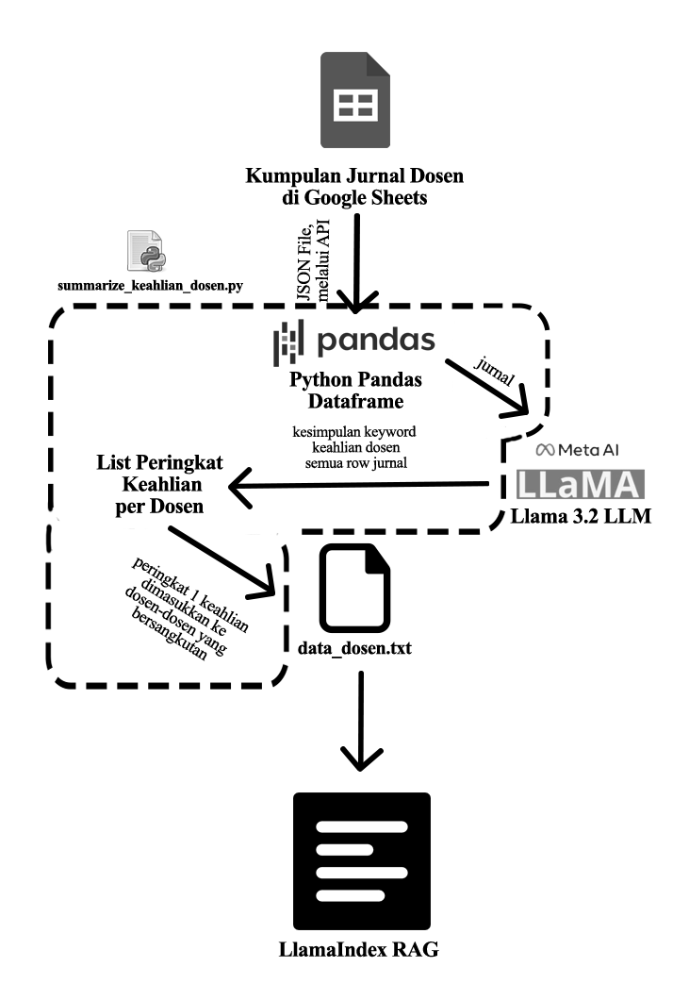
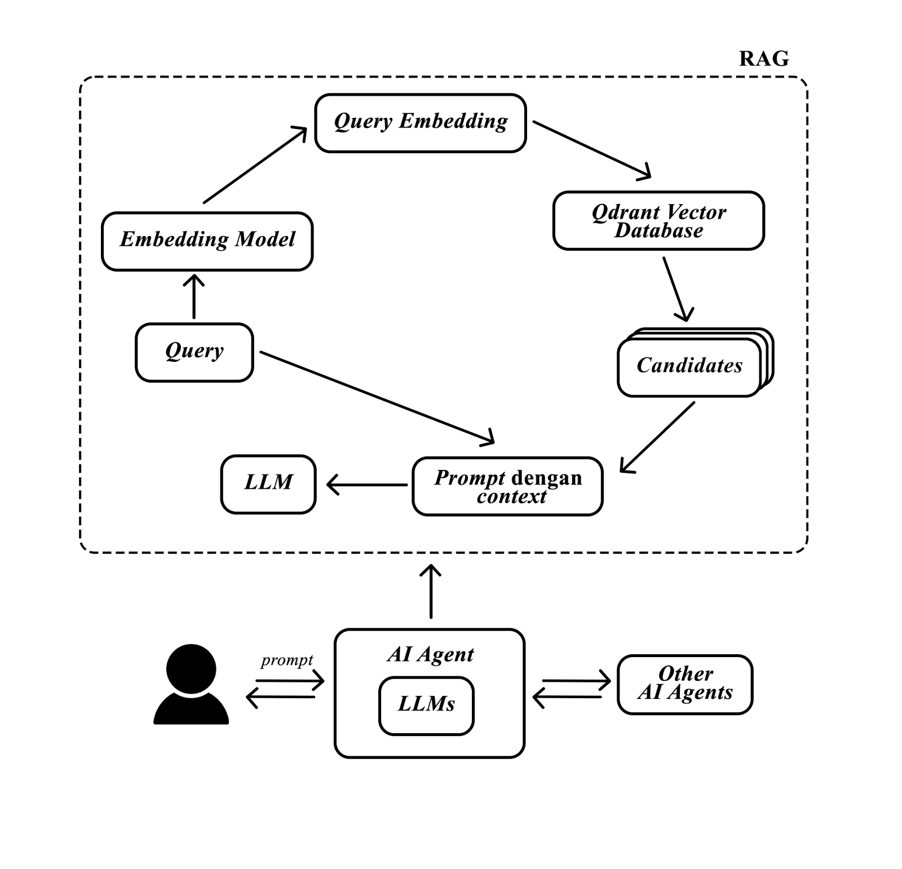
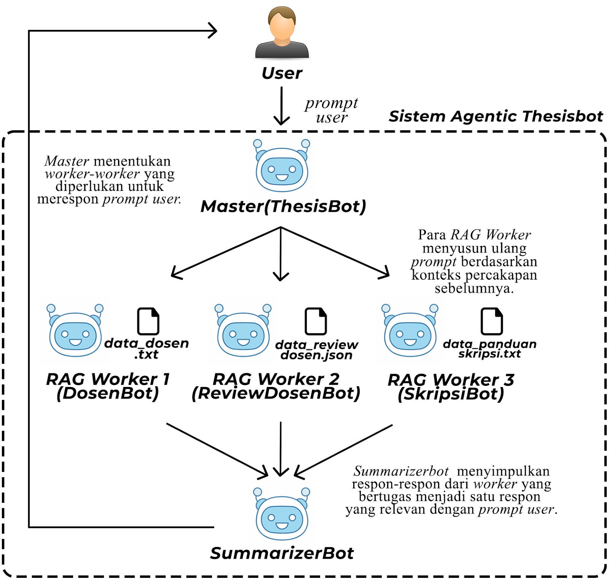
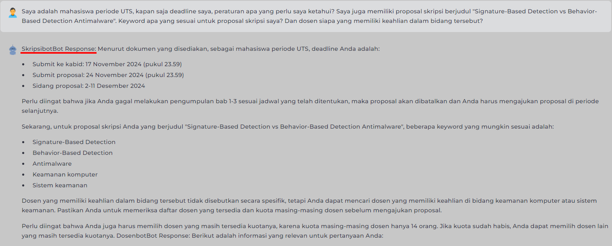
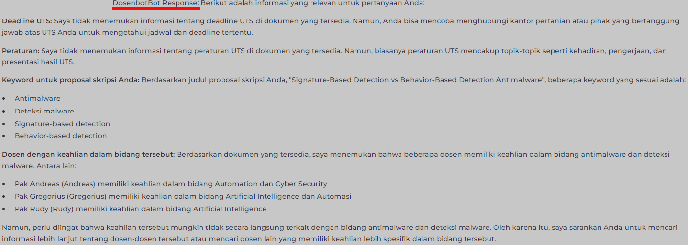
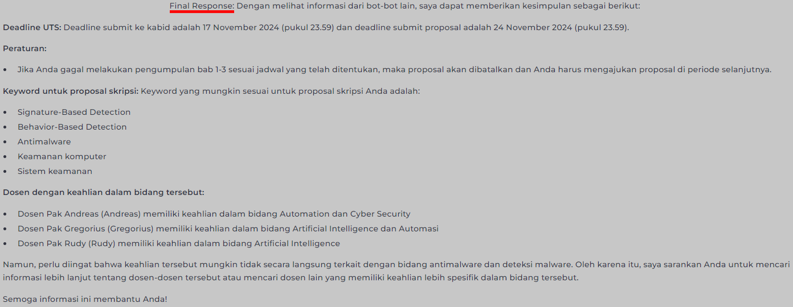

# Functions to handle chat history persistence
def save_chat_history(messages):
with open(CHAT_HISTORY_FILE, "w") as file:
json.dump(messages, file)
def load_chat_history():
if os.path.exists(CHAT_HISTORY_FILE):
with open(CHAT_HISTORY_FILE, "r") as file:
return json.load(file)
return [] # Return empty list if no history is found
# Main Program
st.title("Master Agent Skripsi QueryBot")
# Initialize chat history or load from file
if "messages" not in st.session_state:
st.session_state.messages = load_chat_history() # Load chat history from file on page load
# Display chat messages from history on app rerun
for message in st.session_state.messages:
# with st.chat_message(message["role"]):
# st.markdown(message["content"])
if(message["role"] == "assistant"):
with st.chat_message("assistant", avatar="./chatbot.png"):
st.markdown(message["content"])
if(message["role"] == "user"):
with st.chat_message("user", avatar="./person.jpg"):
st.markdown(message["content"])
# Save chat history
def add_message(role, content):
st.session_state.messages.append({"role": role, "content": content})
save_chat_history(st.session_state.messages) # Save history to file
chatbot = Chatbot()
skripsiBot = SkripsiBot()
dosenBot = DosenBot()
summarizeBot = SummarizeBot()
chatbot.set_chat_history(st.session_state.messages)
# React to user input
if prompt := st.chat_input("What is up?"):
unsum_resp = ""
tools_used = "tools used:"
# Display user message in chat message container
with st.chat_message("user", avatar="./person.jpg"):
st.markdown(prompt)
add_message("user", prompt) # Save user message
# Get AI response
with st.chat_message("assistant", avatar="./chatbot.png"):
full_prompt = f"{system_prompt}\nMahasiswa: {prompt}\nBudiAI:"
response = chatbot.run_llama(full_prompt)
if(response.__contains__("skripsiBot") or response.__contains__("dosenBot") or response.__contains__("publikasiBot") or response.__contains__("SkripsiBot") or response.__contains__("DosenBot") or response.__contains__("PublikasiBot")):
if(response.__contains__("skripsiBot") or response.__contains__("SkripsiBot")):
skripsiBotResp = skripsiBot.chat_engine.chat(prompt)
unsum_resp+="\n"+"skripsiBot Response:"+skripsiBotResp.response
tools_used+="SkripsiBot\n"
if(response.__contains__("dosenBot") or response.__contains__("DosenBot")):
dosenBotResp = dosenBot.chat_engine.chat(prompt)
unsum_resp+="\n"+"dosenBot Response:"+dosenBotResp.response
tools_used+="dosenBot\n"
summ_prompt = f"{summarizer_prompt}\n Pertanyaan mahasiswa: {prompt} informasi dari bot lain: {unsum_resp}\nSummarizerBot:"
final_resp = summarizeBot.run_llama(summ_prompt)
else:
final_resp = response
tools_used+="None"
st.markdown(unsum_resp+"\n"+"Final Response:"+"\n"+final_resp+"\n"+tools_used)
add_message("assistant", unsum_resp+"\n"+"Final Response:"+"\n"+final_resp+"\n"+tools_used) # Save assistant response
st.sidebar.header("Control Point")
redirect_to_home = False

001 : Thesis-bot
A chatbot that helps students in their thesis authoring, utilizing Retrieval Augmented Generation(RAG) with Agentic Architecture. This project was proposed as the Generative Artificial Intelligence Coursework.
Overview
The main issue in the effectiveness of faculty thesis coordinator responses to students working on their theses is
the
professors' busy schedules and the high volume of questions asked. To address this issue, a thesis chatbot was
developed as a solution that can help partially replace the role of
lecturers in providing guidance related to the selection of thesis
supervisors, the thesis process, thesis defense schedules, and even thesis topic
recommendations.
The thesis chatbot uses the Retrieval-Augmented Generation (RAG) method to
generate answers based on relevant
information sourced from external sources, such as Google Spreadsheets and Qdrant. Additionally, the Large Language Model (LLM) technology with a neural network concept is used to
support natural language processing capabilities. The
Embedding Model system is applied to convert text into vectors so that it can
be read by RAG. This chatbot also adopts
an agentic system, where each agent is tasked with processing specific
documents according to their assigned duties.
The test results show that several models, such as Llama 3.2 and Llama 3.1:8b-instruct-q5_1, provide efficient
performance. With the combination of RAG methods, LLM, Embedding Model, and an agentic system, the thesis chatbot can
operate effectively and efficiently. This chatbot is expected to be a useful tool for students at Petra Christian
University in supporting their thesis work. Currently, the thesis chatbot has been implemented on the private server
of the university.
Technology Stack
Streamlit
Ollama (Llama 3.2)
RAG
Qdrant
FastEmbed
Google Sheets API
Python
Data Preprocessing
High-quality data is crucial for the Thesis Bot's performance. The preprocessing workflow transforms raw data into vector embeddings stored in Qdrant cloud database:
1. Professor Data Processing

The system collects professor data through Google Sheets API, including name, contact info, and research expertise. For expertise identification, Llama 3.2 analyzes professor publications to extract relevant expertise keywords. The algorithm ranks these keywords by frequency, selecting the most common ones as the professor's expertise domains. This processed data is stored in data_dosen.txt for efficient retrieval.
2. Professor Reviews Processing
Student reviews of professors are collected through Google Forms and integrated into Google Sheets. Each review undergoes summarization by Llama 3.2 to extract key patterns in teaching and supervision styles. This provides better context about each professor's mentoring approach. The summarized reviews are stored in data_review_dosen.txt.
3. Thesis Guidelines Processing
Thesis guidelines, schedules, and requirements are stored in Google Docs for easy updates by thesis coordinators. The system accesses this information through Google Docs API and formats it appropriately in data_panduan_dosen.txt.
4. Vector Embedding

After text preprocessing, the system converts all textual data into numerical vectors using different embedding models:
- FastEmbedEmbeddings with jinaai/jina-embeddings-v2-base-en: Used for professor data that requires higher accuracy with complex information
- NomicOllamaEmbedding: Used for thesis guidelines where faster processing is needed with acceptable accuracy
These vectors are stored in Qdrant cloud database, enabling efficient similarity search when responding to user queries.
System Architecture

The system architecture implements an agentic design pattern framework optimized for efficient data retrieval and minimal hallucination. The Master Bot functions as a central mediator (Mediator Pattern), analyzing user queries with Llama 3.2 to determine which specialized worker agents should handle the request. Each worker agent specializes in a specific domain:
- DosenBot: Manages professor information and expertise
- SkripsiBot: Handles thesis guidelines and processes
- ReviewDosenBot: Provides professor reviews and mentoring styles (due to irrelevance, ommmited in the final version)
Worker agents utilize different embedding models based on their data characteristics:
- FastEmbedEmbeddings with jinaai/jina-embeddings-v2-base-en: Used for complex professor data (achieving 90% accuracy on complex queries)
- NomicOllamaEmbedding: Applied for thesis guidelines (processing in ~5 seconds vs 15+ seconds with FastEmbed)
This strategic embedding selection creates an optimal balance between speed and accuracy for different query types.
The query flow follows a Chain of Responsibility Pattern:
- User submits query to Master Bot
- Master Bot analyzes and routes to appropriate worker agents
- Worker agents execute RAG against domain-specific vector databases
- SummarizerBot uses Composite Pattern to consolidate all responses
This architecture successfully reduces hallucination through the retrieval of verified information while maintaining response efficiency, with tests showing .txt files process approximately twice as fast as CSV files during embedding.
App Demo

User sends a prompt to the system. Master bot receives the prompt and determines which worker agents are relevant to the prompt. Master agent passes and assign the prompt to the chosen worker agents.In this case, Dosenbot and Skripsibot are assigned the task. Skripsibot's response is shown above

Dosenbot receives the prompt and generate the response based on the context documents it is responsible of. The response are shown above.

Summarizerbot receives the response from the other 2 bots concatenated into one prompt. Summarizerbot summarizes these response into the final response. This final response is the one shown to user.
Major Project Code
ThesisBot uses an agentic architecture with a Master Bot controlling several specialized worker bots, each responsible for a specific domain of thesis-related information.
Main App
Master Agent
Worker Agents (2)
Summarizer Agent
class Chatbot:
def __init__(self, llm="llama3.2:latest"):
self.llm = llm
self.memory = self.create_memory()
def run_llama(self, prompt):
result = subprocess.run(['ollama', 'run', self.llm, prompt], capture_output=True, text=True)
return result.stdout
def set_chat_history(self, messages):
self.chat_history = [ChatMessage(role=message["role"], content=message["content"]) for message in messages]
self.chat_store.store = {"chat_history": self.chat_history}
def create_memory(self):
self.chat_store = SimpleChatStore()
return ChatMemoryBuffer.from_defaults(chat_store=self.chat_store, chat_store_key="chat_history", token_limit=16000)
system_prompt = """
Kamu adalah sebuah AI model bernama BudiAI,
Kamu selalu berinteraksi dengan mahasiswa
Kamu adalah sebuah chatbot untuk membantu
mahasiswa melakukan bimbingan dan mengikuti
urutan pengajuan skripsi.
Kamu memiliki 3 bawahan dengan nama:
DosenBot,
SkripsiBot,
PublikasiBot,
DosenBot memiliki seluruh informasi mengenai dosen dan keahliannya.
SkripsiBot memiliki seluruh informasi mengenai aturan skripsi, alur skripsi, jadwal skripsi, dan tawaran dosen bagi mahasiswa yang kebingungan memilih/membuat judul skripsi.
PublikasiBot memiliki beberapa informasi mengenai publikasi yang pernah dilakukan oleh dosen.
Kamu hanya akan memberikan jawaban berupa "DosenBot", "SkripsiBot", atau "PublikasiBot" apabila ada pertanyaan mengenai skripsi, dosen, ataupun publikasi dosen yang diberikan kepadamu.
Contoh format jawaban:
"SkripsiBot\nDosenBot", "SkripsiBot\nPublikasiBot", "DosenBot\nPublikasiBot\nDosenBot". \n adalah newline
Kamu bisa memberikan lebih dari 1 bot sebagai jawaban, namun pertimbangkan baik-baik apakah bot tersebut sesuai dengan pertanyaan yang diberikan kepadamu
Jangan menyebutkan informais bahwa kamu memiliki 3 bawahan bahkan ketika ditanya secara eksplisit. cukup mengaku sebagai chatbot pembantu skripsi kepada mahasiswa
"""
Dosen Bot
class DosenBot:
def __init__(self, llm="llama3.2:latest", embedding_model="", vector_store=None):
self.Settings = self.set_setting(llm, embedding_model)
# Indexing
self.index = self.load_data()
# Memory
self.memory = self.create_memory()
# Chat Engine
self.chat_engine = self.create_chat_engine(self.index)
def set_setting(_arg, llm, embedding_model):
Settings.llm = Ollama(model=llm, base_url="http://127.0.0.1:11434")
Settings.embed_model = NomicOllamaEmbedding()
Settings.system_prompt = """
Kamu adalah sebuah AI model bernama DosenBot.
Kamu memiliki keahlian dan pengetahuan mengenai memiliki seluruh informasi mengenai dosen dan keahliannya.
Jawab pertanyaan dan berikan informasi yang relevan sesuai dengan permasalahan yang diberikan kepadamu.
Input yang diberikan kepadamu mungkin tidak selalu terstruktur dengan baik. Analisis dosen yang bersangkutan, atau berikan seluruh informasi dosen yang sesuai.
Apabila permasalahan yang diberikan tidak ada dalam dokumen yang kamu miliki ataupun berhubungan dengan dosen, berikan output berupa "NORESP" tanpa tambahan kata ataupun kalimat lain. hanya "NORESP". Segala permasalahan yang tidak berhubungan dengan dosen seperti (namun tidak terbatas pada): masalah medis, masalah keuangan, masalah beasiswa, apalagi masalah yang tidak berhubungan dengan perkuliahan ataupun skripsi ataupun dosen bukan wewenangmu. Cukup respon dengan kata "NORESP".
Format: Berikan jawaban yang sesuai atau "NORESP"."""
return Settings
@st.cache_resource(show_spinner=True)
def load_data(_arg, vector_store=None):
with st.spinner(text="Sedang memuat informasi dosen, sabar yaa."):
reader = SimpleDirectoryReader(input_dir="./Agentic_RAG/sp/dosen", recursive=True)
documents = list(reader.load_data())
# Initialize the splitter with chunk size and overlap
tokenizerModel = AutoTokenizer.from_pretrained("nomic-ai/nomic-embed-text-v1.5")
token_splitter = TokenTextSplitter(chunk_size=512, chunk_overlap=64, backup_separators=["\n\n"], tokenizer=tokenizerModel)
split_documents = [token_splitter.split_text(doc.text) for doc in documents]
# Flatten the list of chunks into individual segments
all_segments = []
for chunks in split_documents:
all_segments.extend(chunks)
# Load Hugging Face tokenizer
# Generate embeddings for each segment
embedder = NomicOllamaEmbedding()
all_embeddings = Settings.embed_model._get_text_embeddings(all_segments)
# Set up Qdrant collection and client if no vector store is provided
if vector_store is None:
client = QdrantClient(
url=st.secrets["qdrant"]["connection_url"],
api_key=st.secrets["qdrant"]["api_key"],
)
vector_store = QdrantVectorStore(client=client, collection_name="Agentic_Dosen")
storage_context = StorageContext.from_defaults(vector_store=vector_store)
index = VectorStoreIndex.from_documents(documents, storage_context=storage_context)
return index
def set_chat_history(self, messages):
self.chat_history = [ChatMessage(role=message["role"], content=message["content"]) for message in messages]
self.chat_store.store = {"chat_history": self.chat_history}
def create_memory(self):
self.chat_store = SimpleChatStore()
return ChatMemoryBuffer.from_defaults(chat_store=self.chat_store, chat_store_key="chat_history", token_limit=16000)
def create_chat_engine(self, index):
return CondensePlusContextChatEngine(
verbose=True,
memory=self.memory,
retriever=index.as_retriever(verbose=True),
llm=Settings.llm
)
Alur Skripsi Bot
class SkripsiBot:
def __init__(self, llm="llama3.2:latest", embedding_model="", vector_store=None):
self.Settings = self.set_setting(llm, embedding_model)
# Indexing
self.index = self.load_data()
# Memory
self.memory = self.create_memory()
# Chat Engine
self.chat_engine = self.create_chat_engine(self.index)
def set_setting(_arg, llm, embedding_model):
Settings.llm = Ollama(model=llm, base_url="http://127.0.0.1:11434")
Settings.embed_model = NomicOllamaEmbedding()
Settings.system_prompt = """
Kamu adalah sebuah AI model bernama SkripsiBot.
Kamu memiliki keahlian dan pengetahuan mengenai alur skripsi, alur skripsi, jadwal skripsi, dan tawaran dosen bagi mahasiswa yang kebingungan memilih/membuat judul skripsi.
Jawab pertanyaan dan berikan informasi yang relevan sesuai dengan permasalahan yang diberikan kepadamu.
Input yang diberikan kepadamu mungkin tidak selalu terstruktur dengan baik. Analisis permasalahan yang bersangkutan, atau berikan seluruh informasi yang dirasa sesuai.
Apabila permasalahan yang diberikan tidak ada dalam dokumen yang kamu miliki, berikan output berupa "NORESP" tanpa tambahan kata ataupun kalimat lain. hanya "NORESP". Segala permasalahan yang tidak berhubungan dengan dosen seperti (namun tidak terbatas pada): masalah medis, masalah keuangan, masalah beasiswa, apalagi masalah yang tidak berhubungan dengan perkuliahan ataupun skripsi ataupun dosen bukan wewenangmu. Cukup respon dengan kata "NORESP".
Format: Berikan jawaban yang sesuai dan sertakan URL link apabila tersedia dalam dokumen yang kamu miliki atau "NORESP"
JANGAN PERNAH MENYEBUT NAMA FILE ATAUPUN FILE PATH SECARA EXPLICIT."""
return Settings
@st.cache_resource(show_spinner=True)
def load_data(_arg, vector_store=None):
with st.spinner(text="Sedang memuat, sabar yaa."):
reader = SimpleDirectoryReader(input_dir="./Agentic_RAG/sp/skripsi", recursive=True)
documents = list(reader.load_data())
# Initialize the splitter with chunk size and overlap
tokenizerModel = AutoTokenizer.from_pretrained("nomic-ai/nomic-embed-text-v1.5")
token_splitter = TokenTextSplitter(chunk_size=512, chunk_overlap=64, backup_separators=["\n\n"], tokenizer=tokenizerModel)
split_documents = [token_splitter.split_text(doc.text) for doc in documents]
# Flatten the list of chunks into individual segments
all_segments = []
for chunks in split_documents:
all_segments.extend(chunks)
# Load Hugging Face tokenizer
# Generate embeddings for each segment
embedder = NomicOllamaEmbedding()
all_embeddings = Settings.embed_model._get_text_embeddings(all_segments)
# Set up Qdrant collection and client if no vector store is provided
if vector_store is None:
client = QdrantClient(
url=st.secrets["qdrant"]["connection_url"],
api_key=st.secrets["qdrant"]["api_key"],
)
vector_store = QdrantVectorStore(client=client, collection_name="Agentic_Alur")
storage_context = StorageContext.from_defaults(vector_store=vector_store)
index = VectorStoreIndex.from_documents(documents, storage_context=storage_context)
return index
def set_chat_history(self, messages):
self.chat_history = [ChatMessage(role=message["role"], content=message["content"]) for message in messages]
self.chat_store.store = {"chat_history": self.chat_history}
def create_memory(self):
self.chat_store = SimpleChatStore()
return ChatMemoryBuffer.from_defaults(chat_store=self.chat_store, chat_store_key="chat_history", token_limit=16000)
def create_chat_engine(self, index):
return CondensePlusContextChatEngine(
verbose=True,
memory=self.memory,
retriever=index.as_retriever(verbose=True),
llm=Settings.llm
)
class SummarizeBot:
def __init__(self, llm="llama3.1:8b-instruct-q5_1"):
self.llm = llm
self.memory = self.create_memory()
def run_llama(self, prompt):
result = subprocess.run(['ollama', 'run', self.llm, prompt], capture_output=True, text=True)
return result.stdout
def set_chat_history(self, messages):
self.chat_history = [ChatMessage(role=message["role"], content=message["content"]) for message in messages]
self.chat_store.store = {"chat_history": self.chat_history}
def create_memory(self):
self.chat_store = SimpleChatStore()
return ChatMemoryBuffer.from_defaults(chat_store=self.chat_store, chat_store_key="chat_history", token_limit=16000)
summarizer_prompt = """
Kamu adalah sebuah AI model bernama SummarizerBot,
Kamu adalah ahli dalam membuat kesimpulan dari informasi yang ada.
Kamu bisa menerima hingga 3 input dari:
DosenBot,
SkripsiBot,
PublikasiBot,
DosenBot memiliki seluruh informasi mengenai dosen dan keahliannya.
SkripsiBot memiliki seluruh informasi mengenai aturan skripsi, alur skripsi, jadwal skripsi, dan tawaran dosen bagi
mahasiswa yang kebingungan memilih/membuat judul skripsi.
PublikasiBot memiliki beberapa informasi mengenai publikasi yang pernah dilakukan oleh dosen.
Kamu akan memberikan jawaban berupa hasil kesimpulan dari informasi yang ada. Jangan hiraukan tulisan skripsiBot,
dosenBot, ataupun publikasiBot apabila ada.
Berikan hasil kesimpulannya saja. Sertakan url link HANYA apabila diberikan dari bot lainnya, anda tidak memiliki
wewenang untuk generate link
Berikut adalah informasi yang kamu dapatkan:
"""